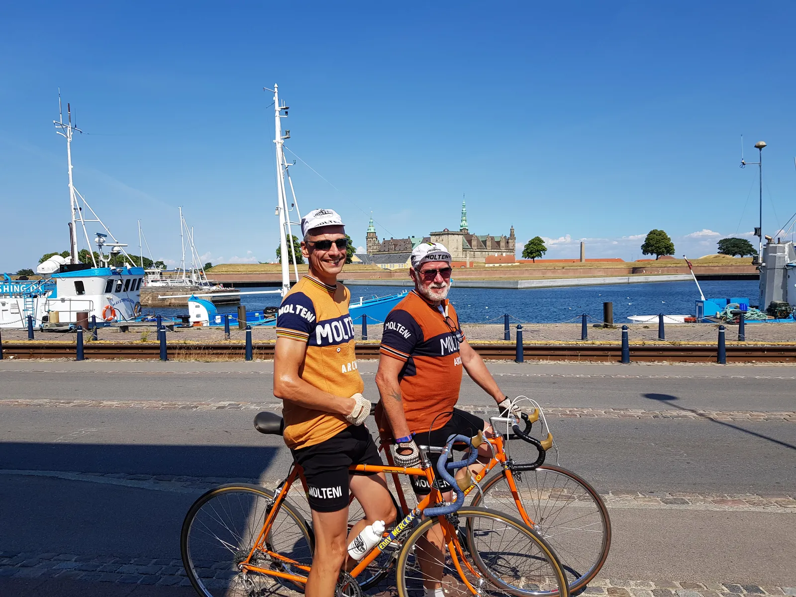

Hvad sker der for Tour de France?!?

”Ahvaffornoget…? – en Tour de France etape på kun 65 km som ikke er en enkeltstart eller et holdløb?? Måske årets hårdeste og mest intense etape, siger du ovenikøbet?”
Nahh… Interessant, men samtidigt et åbenlyst knæfald for tanken om at der skal være action fra start for at fastholde seerne. Og hårdheden er muligvis reel, men afgjort kortvarig. Et sløjt udtryk for moderne tider….
Nej – så hellere en hyldest til langvarig opslidning. En klassisk Squadra Molteni-dag i sadlen med ruteplanlægning dels af Brian Holm*, dels af holdlægen, der dikterer mængdetræning i høj varme med kun 1 stk. 500 ml dunk for at stå skarp til efterårssæsonen.
Og således drog Langergaard og Blume på rundtur i det Nordsjællandske i det varmeste sommervejr Danmark kan præstere. Start ved AB’s baner, ”Kysten Rundt” ad naturskønne veje med skov og kornmarker, havudsigt og søbrise, Stjerneskud-forplejning, romkuglestop og slutteligt et veltimet besøg på ”Cranks & Coffee” til TdF-etapeslutning efter det sidste hårde interval forbi Nivå.
Langergaard satte ny PR med en kropstemperatur på 48c ved Kronborg med deraf følgende tung uldtrøje og Blume måtte derfor tage yderligere 90 km strafrunde hjem til Næstved for at opnå en omtrent tilsvarende trøjevægt.
Molteni HQ har nu analyseret de to afgivne blodprøver og finder den syltetøjsagtige konsistens tilfredsstillende. ”Der er stort set kun røde blodlegemer tilbage”, udtaler Holdlæge Finn Birk. ”Den der kører tørt, kører godt! Sådan var det i 70’erne og sådan er det også i dag!”

*Brian Holms Kysten Rundt: “Sort kaffe og hvide sokker”, side 70-71. ISBN 978-87-400-2316-9